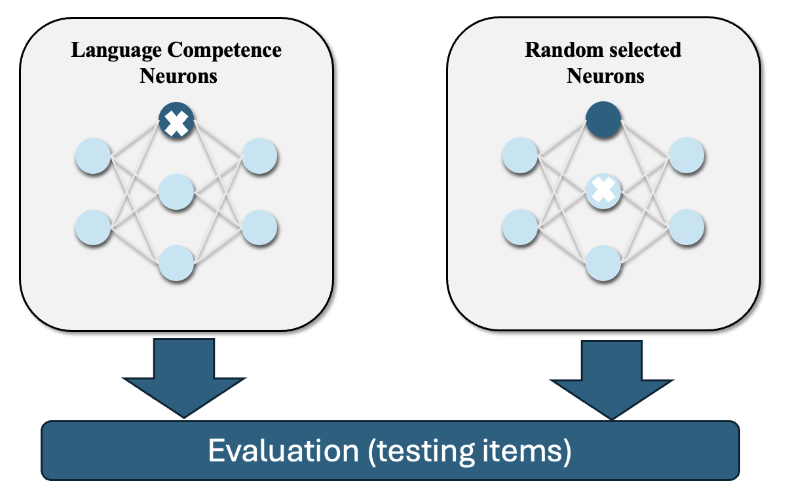
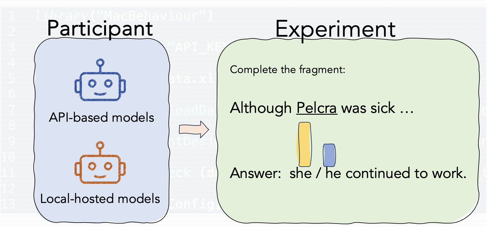

About Me

Xufeng Duan (段旭峰)
I will be a Research Assitant Professor in the Language Processing Lab at Brain and Mind Institute, The Chinese University of Hong Kong (CUHK). I am currently seeking a AP position in 2026.My research focuses on human language production and large language models (LLMs). I use behavioral, EEG, and fMRI data, along with computational methods, to explore the mechanisms of human language system. I also work on mechanistic interpretability, which aims to reverse-engineer the internal workings of LLMs to understand how specific computations (e.g., syntax, prediction) are implemented. Additionally, I am trained and licensed in TMS for research purposes in Hong Kong and have completed an internship as a language therapist/researcher specializing in aphasia at the Third Affiliated Hospital of Sun Yat-sen University.
Email: xufeng.duan@link.cuhk.edu.hk
Google scholar
Selected Research

Unveiling Language Competence Neurons: A Psycholinguistic Approach to Model Interpretability
Identifing interpretable units in large language models aligned with psycholinguistic effect, bridging model neurons and human linguistic competence.
Link

MacBehaviour: An R package for behavioural experimentation on large language models
An open-source R toolkit to help researchers quickly set up psychology behavioral experiments interacting with LLMs, either locally or in the cloud.
LinkPublications
Zhao, N., & Duan, X. (2025). Enhancing Conference Interpreting with Computer-assisted Interpreting Tools: A Multi-agent System. PsyArXiv preprint. 10.31234/osf.io/pc3ht_v1Zhao, N., Duan, X., & Cai, Z. G. (in press). The missing half of language learning in current developmental language models: Exogenous and endogenous linguistic input. Open Mind.
Duan, X., Yao, Z., Zhang, Y., Wang, S., & Cai, Z. G. (2025). How syntax specialization emerges in language models. arXiv preprint, arXiv:2505.19548. 10.48550/arXiv.2505.19548
Lin, Y., Duan, X., Haslett, D., Chen, Y., & Cai, Z. G. (2025). Information Loss in LLMs' Multilingual Translation: The Role of Training Data, Language Proximity, and Language Family. arXiv preprint, arXiv:2506.23340. 10.48550/arXiv.2506.23340
Xiao, B., Duan, X., Haslett, D. A., & Cai, Z. G. (2025). Human-likeness of LLMs in the Mental Lexicon. Proceedings of the 29th Conference on Computational Natural Language Learning (pp. 586–601). Vienna, Austria: Association for Computational Linguistics. https://aclanthology.org/2025.conll-1.38/
Qiu, Z., Duan, X., & Cai, Z. G. (2025). Grammaticality representation in ChatGPT as compared to linguists and laypeople. Humanities and Social Sciences Communications, 12(1), 1-15. 10.1057/s41599-025-04907-8
Wang, S., Duan, X., & Cai, Z. (2025). What to predict? Exploring how sentence structure influences contrast predictions in humans and large language models. In T. Kuribayashi, G. Rambelli, E. Takmaz, P. Wicke, J. Li, & B.-D. Oh (Eds.), Proceedings of the Workshop on Cognitive Modeling and Computational Linguistics (pp. 244–252). NAACL 2025. 2025.cmcl-1.28
Wu, H., Duan, X., & Cai, Z. (2025). Distinct social-linguistic processing between humans and large audio-language models: Evidence from model-brain alignment. In T. Kuribayashi, G. Rambelli, E. Takmaz, P. Wicke, J. Li, & B.-D. Oh (Eds.), Proceedings of the Workshop on Cognitive Modeling and Computational Linguistics (pp. 135–143). NAACL 2025. 2025.cmcl-1.18
Duan, X., Li, S., & Cai, Z. G. (2025). MacBehaviour: An R package for behavioural experimentation on large language models. Behavior Research Methodss, 57(1), 19. doi:10.3758/s13428-024-02524-y
Duan, X., Zhou, X., Xiao, B., & Cai, Z. (2025). Unveiling language competence neurons: A psycholinguistic approach to model interpretability. In O. Rambow, L. Wanner, M. Apidianaki, H. Al-Khalifa, B. D. Eugenio, & S. Schockaert (Eds.), Proceedings of the 31st International Conference on Computational Linguistics (pp. 10148–10157). Association for Computational Linguistics. https://aclanthology.org/2025.coling-main.677/
Zhou, X., Chen, D., Cahyawijaya, S., Duan, X., & Cai, Z. G. (2025). Linguistic Minimal Pairs Elicit Linguistic Similarity in Large Language Models. Proceedings of the 31st International Conference on Computational Linguistics (pp. 6866–6888). Association for Computational Linguistics. https://aclanthology.org/2025.coling-main.459/
Tang, X., Duan, X., & Cai, Z. G. (2024). Are LLMs Good Literature Review Writers? Evaluating the Literature Review Writing Ability of Large Language Models. arXiv preprint arXiv:2412.13612. doi:10.48550/arXiv:2412.13612
*Wang, S., *Duan, X., & Cai, Z. (2024). A Multimodal Large Language Model "Foresees" Objects Based on Verb Information but Not Gender. In Proceedings of the 28th Conference on Computational Natural Language Learning (pp. 435-441). doi:10.18653/v1/2024.conll-1.32
Qiu, Z., Duan, X., & Cai, Z. (2024). Evaluating Grammatical Well-Formedness in Large Language Models: A Comparative Study with Human Judgments. In Proceedings of the Workshop on Cognitive Modeling and Computational Linguistics (pp. 189-198). 10.18653/v1/2024.cmcl-1.16
Duan, X., Xiao, B., Tang, X., & Cai, Z. G. (2024). HLB: Benchmarking LLMs' Humanlikeness in Language Use. arXiv:2409.15890 [cs.CL]. doi:10.48550/arXiv.2409.15890
Duan, X., & Cai, Z. G. (2024). Chinese Character Processing. Oxford Research Encyclopedia of Linguistics. Oxford University Press. doi: 9780199384655.013.1012.
H. Wu, Duan, X., Cai, Z. G.(2024). Speaker Demographics Modulate Listeners' Neural Correlates of Spoken Word Processing. Journal of Cognitive Neuroscience 2024; 36 (10): 2208–2226. doi: 10.1162/jocn_a_02225
Cai, Z., Duan, X., Haslett, D., Wang, S., & Pickering, M. (2024). Do large language models resemble humans in language use?. In Proceedings of the Workshop on Cognitive Modeling and Computational Linguistics (pp. 37-56). doi:10.18653/v1/2024.cmcl-1.4
Qiu, Z., Duan, X., & Cai, Z. (2023). Does ChatGPT Resemble Humans in Processing Implicatures?. In Proceedings of the 4th Natural Logic Meets Machine Learning Workshop (pp. 25-34)https://aclanthology.org/2023.naloma-1.3
Lu, S., Duan, X. & Li X.(2021). Prominence and Locality Principle in Chinese Possessive Topicalization Sentences and its Psychological Basis——Evidence from eye-movements. Contemporary Linguistics 23(1): 56-73 [pdf]
Conference Talks
Xufeng Duan MacBehaviour: An R package for behavioural experimentation on large language models. (2024). Architectures and Mechanisms for Language Processing Asia (AMLaP Asia). Singapore.Xufeng Duan The Neural Basis of Decline in Written Production: Evidence from Chinese Handwriting (2024). The annual meeting of Society for the Neurobiology of Language (SNL) . Brisbane, Australia.
Xufeng Duan Humanlike language use in LLMs (2024). CogSci Hong Kong Meetup Hong Kong, China.
Xufeng Duan Chinese translations of English words: A comparison between human and ChatGPT translations (2023). Architectures and Mechanisms for Language Processing Asia (AMLaP Asia). Hong Kong, China.
Zhenguang Cai, Xufeng Duan, Lu Sun and Martin PickeringStructural priming in ChatGPT (2023). Architectures and Mechanisms for Language Processing Asia (AMLaP Asia). Hong Kong, China.
Zhenguang Cai, Xufeng Duan, David Haslett, Shuqi Wang & Martin Pickering. Do language models resemble humans in language use (2023)? Architectures and Mechanisms for Language Processing (AMLaP). Donostia-San Sebastián, Spain.
Zhuang Qiu, Xufeng Duan, and Zhenguang Cai. Does ChatGPT Resemble Humans in Processing Implicatures (2023)? Proceedings of the 4th Natural Logic Meets Machine Learning Workshop, pages 25–34, Nancy, France. Association for Computational Linguistics.
Xufeng Duan(2018). Language rehabilitation training therapies for Chinese aphasia— Using Chinese characters as clues. Beyond A Limited Scope: Chinese for Specific, Academic, & Professional Purposes Hawaii, US.
Xufeng Duan(2018). The Dependence on different symbolic systems during word recognition-pronunciation tests by Chinese native speakers with aphasia——based on eye-movement methodology. Annual Conference of the Chinese Society of Neurological Linguistics. Xuzhou, China.
Xufeng Duan(2018). The Rules of Prominency and Locality Psychological Reality Basis. Annual Academic Conference of the Chinese Linguistic Society. Guangzhou, China.
Poster Presentations
Yichi Zhang, Xufeng Duan & Zhenguang Cai. (2024). The causal role of left inferior frontal gyri in Chinese character handwriting: A transcranial magnetic stimulation study. The annual meeting of Society for the Neurobiology of Language (SNL) . Brisbane, Australia.Zhuang Qiu, Xufeng Duan & Zhenguang Cai. (2024). Do Large Language Models Resemble Humans in Grammaticality Judgement? Human sentence processing 2024 . University of Michigan, USA.
Xufeng Duan, Zhenguang Cai & Bo Yao. (2023). Electrophysiological responses associated with character amnesia in Chinese handwriting. Architectures and Mechanisms for Language Processing (AMLaP). Donostia-San Sebastián, Spain.
Hanlin Wu, Xufeng Duan & Zhenguang Cai. (2023). Belief of Speakers' Linguistic Competence Modulates the N400 Effect Elicited by Inconsistent Lexical Use. Architectures and Mechanisms for Language Processing (AMLaP). Donostia-San Sebastián, Spain.
Zhuang Qiu, Xufeng Duan, Zhenguang Cai & Nan Zhao. (2023). Pragmatic Implicature Processing in ChatGPT. Architectures and Mechanisms for Language Processing (AMLaP). Donostia-San Sebastián, Spain.
Research Projects
Large language models for language research
- LLMs and Brain Alignment
- Humanlikeness
- LLMs' Interpretability
Orthographic Processing in Chinese Handwriting
- Character amneisa: Behavior/EEG/fMRI study
- Timecourse of Chinese handwriting: EEG study
- Timecourse of Chinese handwriting: EEG study
Awards and Scholarships
The Chinese university of Hong Kong Ph.D. Studentship around 880,000 HKDResearch Funding
Key Laboratory Open Fund for student(2019), 30,000 RMB Multimodal(EEG/fNIRs/Eyetrakcing) Corpus for Special Population. Sun Yat-sen University.Training/Intership
TMS training APAC TMS clinic Workshop, University of Numnich & MagMore Company May.2023Language therapist The Third Affiliated Hospital of Sun Yat-sen University Jul.2017-Jul.2019
Last updated 24/05/2025